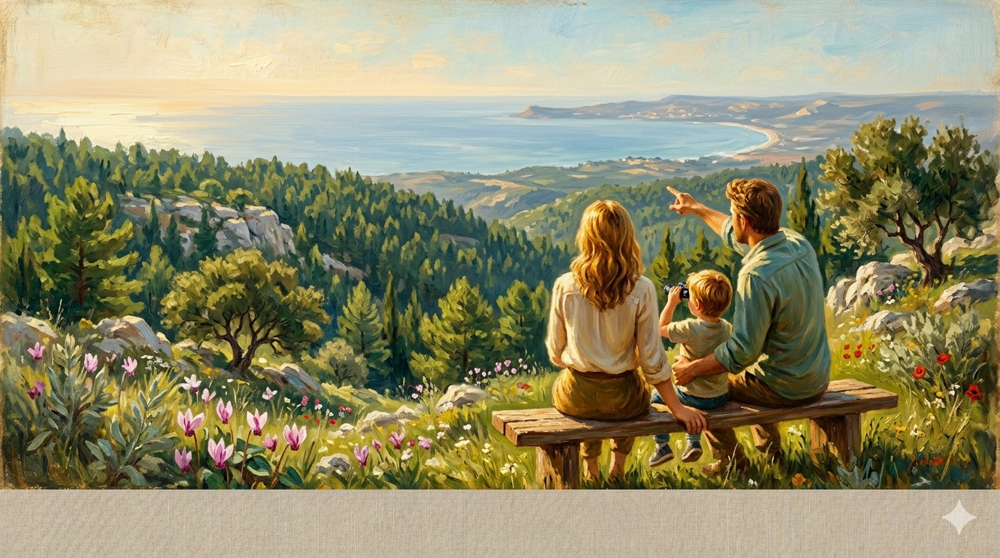
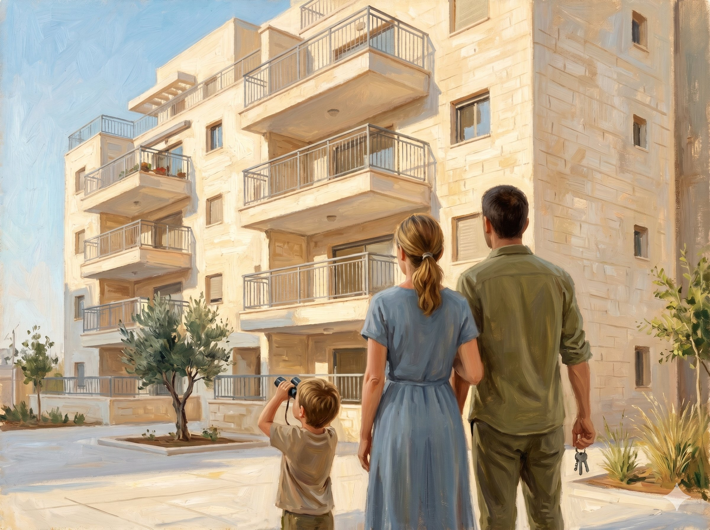
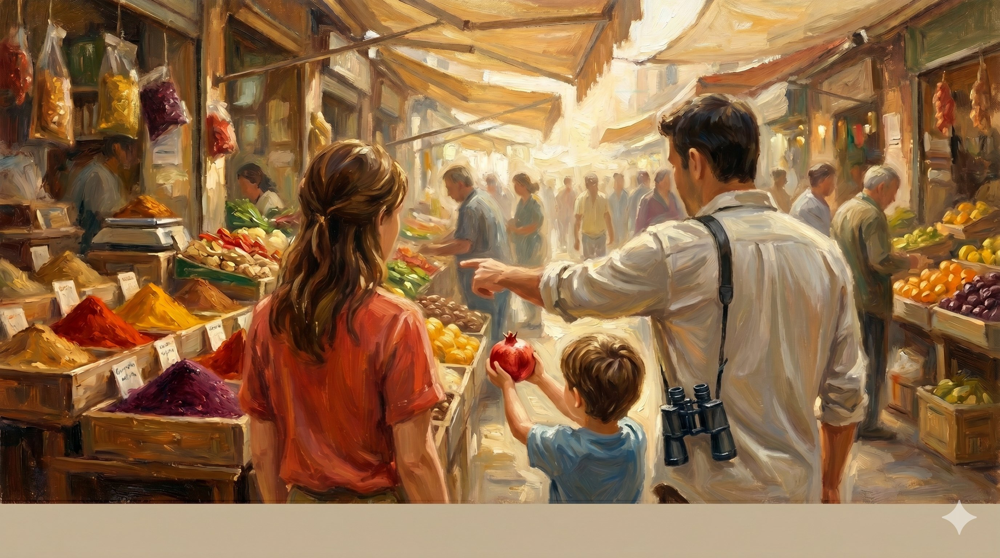

תכירו את אלי
יש לו דירה בלי משכנתא. ההון ממכירתה יספיק לקבלת משכנתא. יועץ משכנתאות רגיל היה נותן אור ירוק. אבל אלי מעולם לא הפקיד לעצמו לפנסיה. בגיל פרישה תהיה לו רק פנסיה קטנה של אשתו — 6,000₪. הוא פשוט לא יוכל לחיות.

השירות מותאם לשלבי חיים, מקצוע והחלטות גדולות. התחל במסלול שלך:

שכר גבוה לא אומר פנסיה מסודרת. גם קולגות שלך בני 55 פורשים מוקדם — השאלה היא אם יש להם מספיק.
לעמוד להייטקיסטים ←
המדינה לוקחת 47 אגורות מכל שקל שלא הפקדת. פנסיה לעצמאי היא לא פחות ממבצע מיסויי — אם עושים אותה נכון.
לעמוד לעצמאים ←
המשכנתא שלך משפיעה על הפנסיה. הפנסיה שלך משפיעה על המשכנתא. כמעט אף יועץ בארץ לא שולט בשני התחומים ביחד.
משכנתא + פנסיה ←
מערכת התמריצים שבתוכה פועלים סוכני הביטוח יוצרת אצלם ארבע הטיות מובנות. לא רעות בכוונה — פשוט בלתי נמנעות.
אם סוכן ימליץ לקנות מוצר — הוא ירוויח. אם יאמר שלא לקנות — ממה יחיה? ליועץ אין שום קושי להמליץ לבטל מוצר. התגמול שלו מגיע ישירות מהלקוח ולא מושפע מההמלצה.
סוכן מתוגמל "נדיב" יותר על מוצרים יקרים. הטיה להמליץ על פוליסת חיסכון למשל — למרות שגמל להשקעה כמעט תמיד עדיף. כך סוכנים "דחפו" ביטוחי מנהלים גם כשהנחיתות מול קרן פנסיה הייתה ברורה.
יצרנים מפעילים "מבצעים" לסוכנים כדי לעודד אותם למכור מוצרים ספציפיים. המלצות הסוכן מוטות לטובת מי שמשלם לו הכי טוב — לא בהכרח לטובתך.
אם ביצוע פעולות מכניס לסוכן כסף — תהיה לו הטיה לבצע אותן. גם אם הן לא לטובתך. ליועץ אין שום תמריץ מסוג זה. הוא יתערב רק כשיש תועלת אמיתית.
החוק מחייב את בעל הרישיון לבחור מודל: או להחזיק רישיון "יועץ פנסיוני" ולקבל תשלום רק מהלקוח — או להחזיק רישיון "משווק" ולקבל עמלות מיצרנים. אסור להיות שניהם.
החוק ברור. הבחירה שלי — ברורה.

תכנון פיננסי הוא מבט אחד, מקצועי ואובייקטיבי, על כל הפיננסים שלך — כמערכת אחת.
קרן הפנסיה, קרן ההשתלמות, ביטוחי החיים והבריאות, קופות הגמל, פוליסות החיסכון, קרנות כספיות, וניירות הערך — לא כל אחד בנפרד, אלא כולם יחד.
אי אפשר לייעץ על הפנסיה שלך בלי לדעת איזה ביטוח חיים יש לך. אי אפשר להמליץ על מסלול השקעה בלי להבין את פרופיל הסיכון המלא. אי אפשר לבחור קרן השתלמות בלי לראות את תיק החיסכון הכולל.
זו בדיוק הנקודה. כשאתה עובד עם סוכן אחד לפנסיה, סוכן אחר לביטוחים, בנקאי לחסכונות — אף אחד מהם לא רואה את התמונה המלאה. ואתה משלם על זה. בגדול.
עבודה איתי היא תהליך — לא שיחה. נפגשים, אוספים את כל המידע (פוליסות, דוחות פנסיה, תיקים), מנתחים את המצב הקיים, מזהים חורים וכפילויות, ובונים תכנית שמתאימה לך. התוצאה: החלטות מבוססות מידע, לא תחושות.
לא מוצר — תכנית.
לא מכירה — ייעוץ.
לא פרט — מערכת.
כמה קולגות שלך בשנות ה־50 וה־60?
בודדים. נכון? ההייטק הוא תעשייה של צעירים — שחיקה, סבבי פיטורים, טכנולוגיות שמתחדשות. ולמרות השכר הגבוה, רוב ההייטקיסטים מגיעים לגיל 50 בלי תוכנית פיננסית אמיתית.
שלוש סיבות שהייטקיסטים צריכים יועץ — יותר מכולם:
כעצמאי בישראל, כל שקל לא־מופקד הוא לא רק פנסיה שאין לך. הוא גם כסף שהמדינה לקחה ממך — מיותר.
תכנון פנסיוני לעצמאי הוא לא אותו סיפור כמו לשכיר. יש מדרגות מס שונות, תקרות הפקדה אחרות, בחירות סבוכות בין פנסיה, השתלמות וקרן כספית. ורוב העצמאים — מפספסים.
שני המוצרים הפיננסיים הגדולים ביותר בחיים — המשכנתא והפנסיה. מעט מאוד אנשים מבינים שיש ביניהם ממשק.
ובודדים ממש הם אנשי המקצוע ששולטים בשני התחומים הללו במקביל. שם נמצא הבידול של השירות שלי — היכולת לראות את המשכנתא לא לבד, אלא כחלק ממכלול פיננסי שלם.